Pilotos
Michael Schumacher
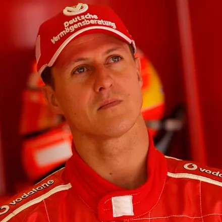
Cantidad de títulos: 7
Años de los campeonatos
- 1994
- 1995
- 2000
- 2001
- 2002
- 2003
- 2004
Lewis Hamilton
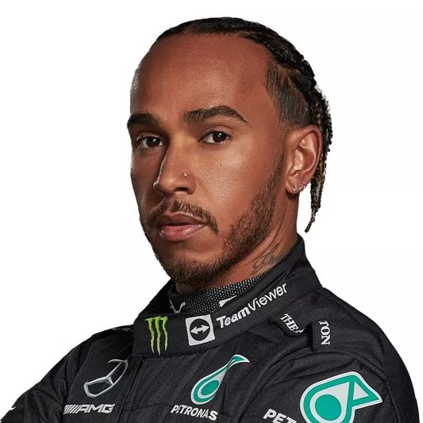
Cantidad de títulos: 7
Años de los campeonatos
- 2008
- 2014
- 2015
- 2017
- 2018
- 2019
- 2020
Juan Manuel Fangio
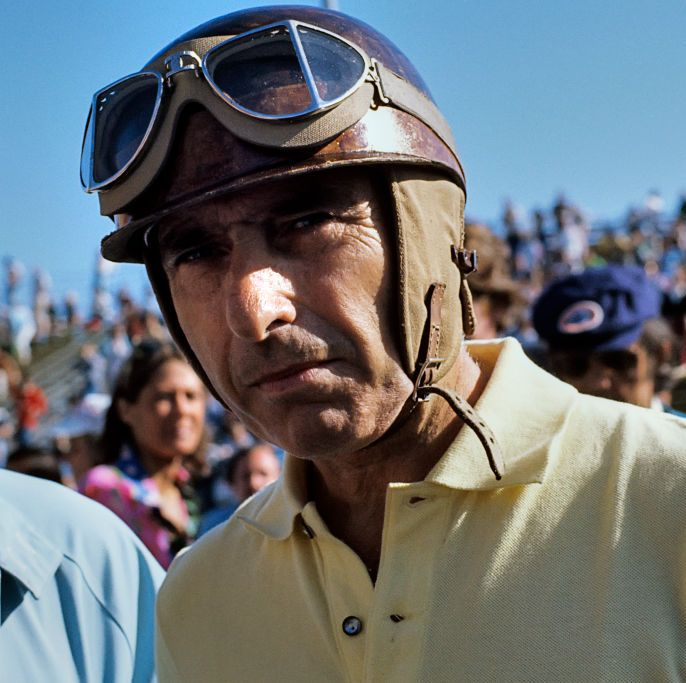
Cantidad de títulos: 5
Años de los campeonatos
- 1951
- 1954
- 1955
- 1956
- 1957
Alain Prost
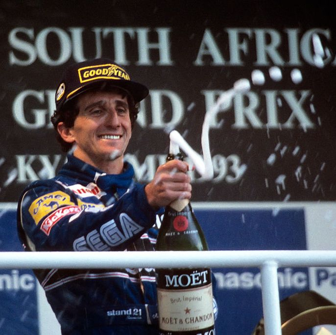
Cantidad de títulos: 4
Años de los campeonatos
- 1985
- 1986
- 1989
- 1993
Sebastian Vettel
Cantidad de títulos: 4
Años de los campeonatos
- 2010
- 2011
- 2012
- 2013
Jack Brabham
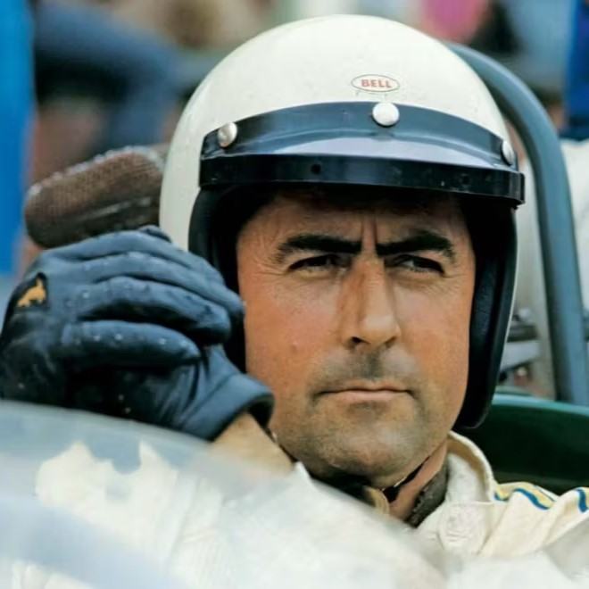
Cantidad de títulos: 3
Años de los campeonatos
- 1959
- 1960
- 1966
Jackie Stewart
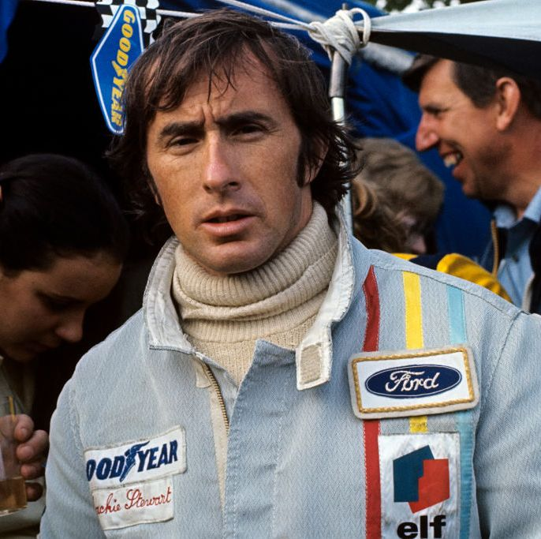
Cantidad de títulos: 3
Años de los campeonatos
- 1969
- 1971
- 1973
Niki Lauda
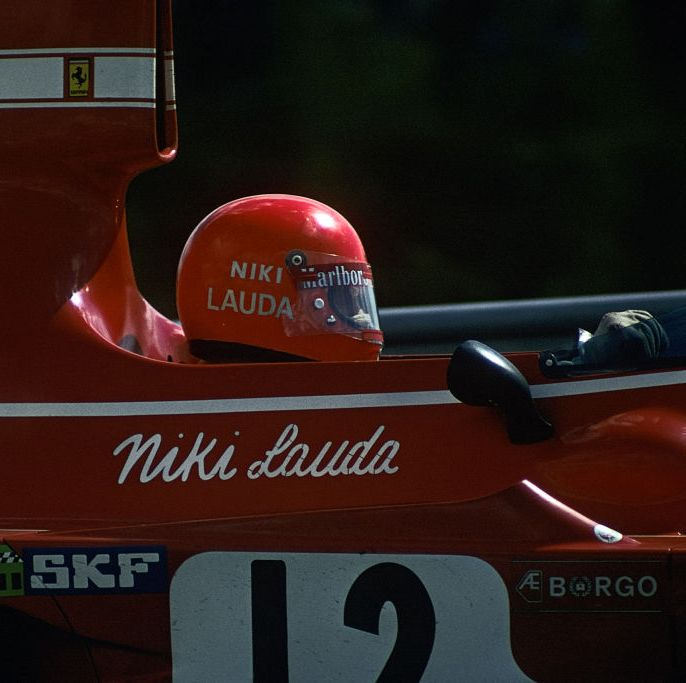
Cantidad de títulos: 3
Años de los campeonatos
- 1975
- 1977
- 1984
Nelson Piquet

Cantidad de títulos: 3
Años de los campeonatos
- 1981
- 1983
- 1987
Ayrton Senna
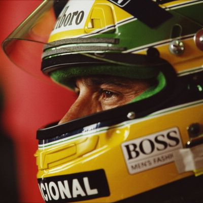
Cantidad de títulos: 3
Años de los campeonatos
1988
1990
1991
Alberto Ascari
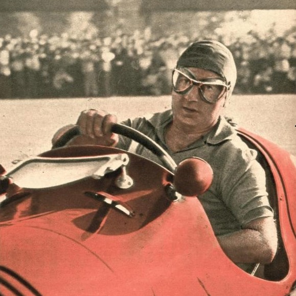
Cantidad de títulos: 2
Años de los campeonatos
- 1952,
- 1953
Jim Clark
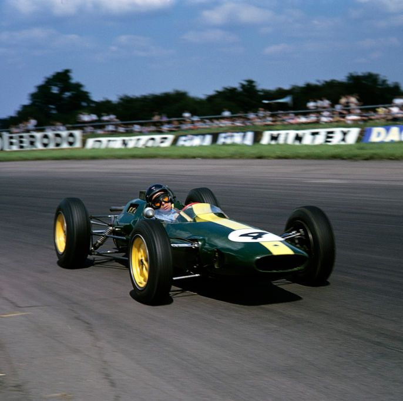
Cantidad de títulos: 2
Años de los campeonatos
- 1963
- 1965
Graham Hill
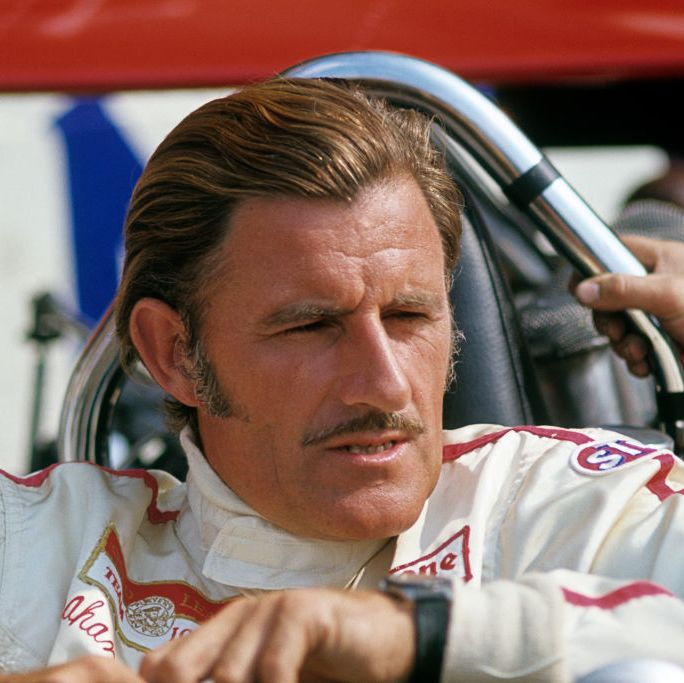
Cantidad de títulos: 2
Años de los campeonatos
- 1962
- 1968
Emerson Fittipaldi
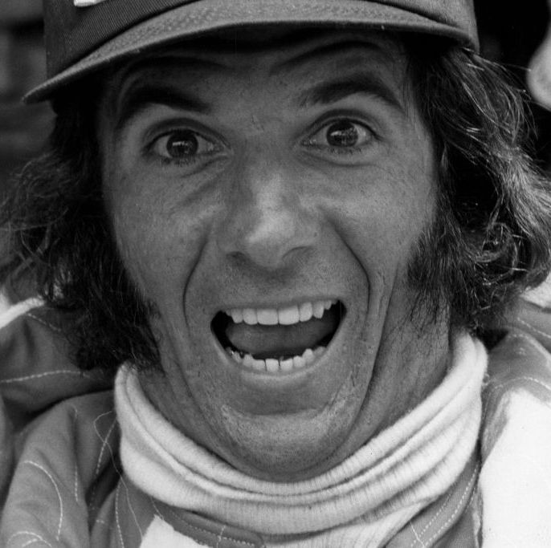
Cantidad de títulos: 2
Años de los campeonatos
- 1972
- 1974
Mika Hakkinen
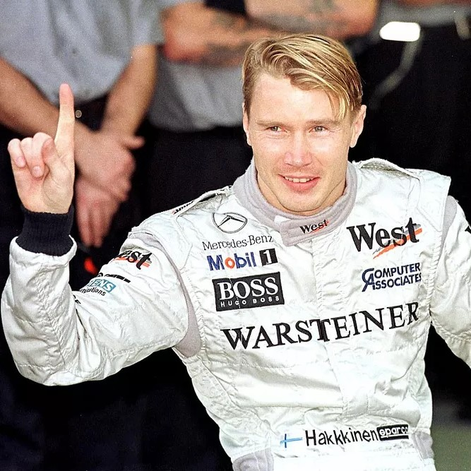
Cantidad de títulos: 2
Años de los campeonatos
- 1998
- 1999
Fernando Alonso

Cantidad de títulos: 2
Años de los campeonatos
- 2005
- 2006